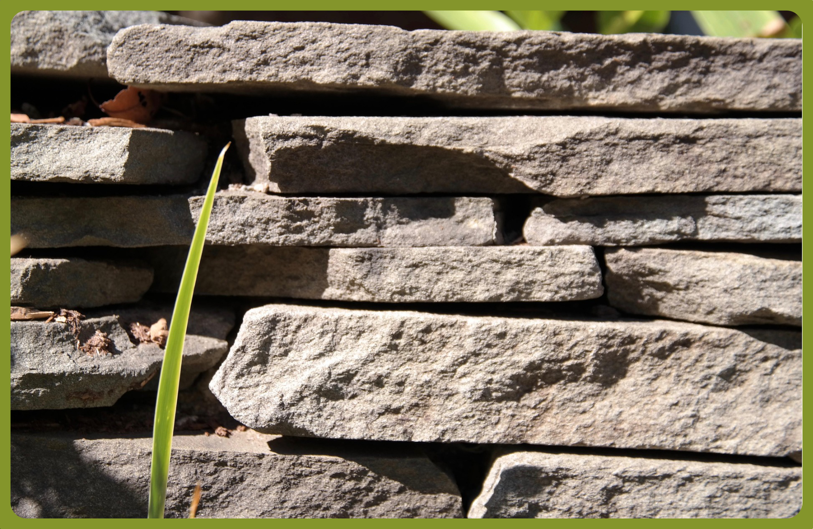

🔎 · ORIGEN · 🎯 · MISIÓN · 🔭 · VISIÓN · ✨

Una historia real de malformación congénita 🧬, adaptación y neuroplasticidad 🧠 asistida con herramientas digitales ⚙️
🌱 Capa Autobiográfica
🦻 "Discapacidad", Lateralidad y Neuroplasticidad 🧠
Mi nombre es Andru Stiven Rodríguez Bustos. Nací el 23 de noviembre de 1978 con una configuración biológica específica en el oído derecho 👂: atresia auricular. Esta condición presenta una morfología compatible con Microtia Grado 3 y Atresia Aural Congénita. ⚙️ El pabellón auricular es una estructura pequeña y lobulada (microtia), mientras que el conducto auditivo externo se encuentra cerrado (atresia), lo que establece una barrera física para el paso normal de las ondas sonoras ❌ hacia el tímpano.

En aquella época, el enfoque médico era limitado respecto a la neuroplasticidad 🧠; se asumía que la única vía para compensar este desfase sensorial era a través de intervenciones quirúrgicas o implantes. ❤️ Mis padres, evaluando que los riesgos eran muy altos ⚠️ para la tecnología de esos años, decidieron no someterme a cirugías. Crecí con mi oído derecho operando con una pérdida auditiva estimada entre el 35% y el 45% (basado en promedios estadísticos para esta condición), ya que durante mi infancia no se realizaron exámenes de decibeles exactos.
Entendiendo el desfase 👂⚖️
• Microtia 🧬: Es el desarrollo incompleto del oído externo 👂. No es una enfermedad, es una variación en la formación del pabellón auricular 🏗️.
• Atresia 🚫: Es la ausencia o estrechamiento del conducto auditivo. En este caso, el sonido no viaja por aire 💨❌, sino principalmente por vibración a través de los huesos del cráneo (conducción ósea). 🦴
• Neuroplasticidad 🧠: Es la capacidad del cerebro para reorganizarse y crear nuevas rutas de aprendizaje 🛤️ ante cambios en los sensores del cuerpo. (leer más 📖)
✍️ La zurdera como estrategia de seguridad 🛡️

Debido a esta configuración, mi sistema se vio forzado a desarrollar una "lateralidad cruzada" ⚖️. Si hubiese sido diestro, mi punto ciego sensorial (el lado derecho) me habría dejado en una vulnerabilidad constante ⚠️ ante el entorno 🌍. Mi cerebro, en un acto de autogestión 🧠, desplazó el mando al hemisferio derecho y puso mi único oído funcional —el izquierdo ✅— en un estado de vigilancia permanente 👂.
✍️ Como la mayoría de las personas zurdas, desarrollé ambidestría de forma inconsciente al adaptarme a un mundo diseñado para diestros (tijeras ✂️, pupitres 📐, botones 🔘). Cada acto cotidiano fue, en realidad, un algoritmo de compensación ⚙️. Este fue mi primer gran entrenamiento en bimanualidad y neuroplasticidad ✨, aunque en ese momento no percibía cómo mi cuerpo también se adaptaba físicamente de manera silenciosa 🦴.
🔄 El "cambio de enfoque" en mi adolescencia ⏳

A los 14 años, mi oído fue sometido a un examen particular de fonoaudiología 🎤 el cual indicó un 35% de disminución auditiva 📉. Debido a que una cirugía o un implante eran inviables en ese momento por diferentes motivos, recibí un consejo: "siempre ubícate del lado derecho de la fuente sonora ➡️".
♂️ Sin dudarlo, empecé a aplicar esta sencilla solución, sin imaginar las complejas consecuencias de aquella decisión. Con el tiempo, mi cuerpo empezó a adaptarse a mi nueva forma de interactuar con mi entorno 🌍. Aproximadamente un año después noté que mi cabeza, mi cuello y mi boca habían perdido simetría respecto al resto del cuerpo (mi cabeza estaba ladeada 🔄), aunque en realidad no podía entender por qué había sucedido esto. No alcanzaba a visualizar que mi cuerpo estaba adoptando sus propias soluciones para compensar mi "sencilla" solución. 🧠⚙️
Actualmente, en 2026, percibo que esa torsión compensatoria también afectó mis hombros, mi cadera y mis rodillas 🦴. Mi cuerpo entero había estado intentando compensar el desequilibrio en mi sensibilidad auditiva ⚖️, sacrificando la simetría para ganar percepción del entorno 🌍. (Este patrón de compensación postural se convertiría, años después, en uno de los ejes de observación de lo que hoy describo como desfase integrado).
📚 Formación, trabajo y contraste de creencias ⚡

Viví un contraste profundo entre 📖educación, trabajo pesado y 🙏creencias que redefinió mi forma de
entender el
aprendizaje 🧠. A partir de octavo grado de secundaria, comencé a estudiar en jornada nocturna al ingresar
a un colegio adjunto a una Iglesia Cristiana.
Aquella experiencia me llevó a analizar mi vida desde múltiples dimensiones: académica, laboral, familiar y
religiosa. Para entonces, muchas de las bases del catolicismo con las que había crecido ya comenzaban a
debilitarse dentro de mi pensamiento, y el contacto con nuevas doctrinas cristianas no resolvió esas dudas;
por el contrario, me impulsó a cuestionar con más profundidad las estructuras religiosas, las
interpretaciones humanas y las contradicciones que percibía entre creencia y experiencia.
Contexto completo → 📖
🎓 Año 1999, mi primer contacto formal con la electrónica: Ingreso a la Universidad Distrital 🏛️

Cuando ingresé a la Universidad Distrital Francisco José de Caldas en 1999, la Facultad Tecnológica
desarrollaba un modelo académico basado en ciclos propedéuticos. Este esquema permitía avanzar
progresivamente desde una formación tecnológica hacia niveles posteriores de especialización
e ingeniería.
Aunque el punto de entrada era la Tecnología en Electrónica, la estructura curricular estaba diseñada
como parte de una trayectoria académica más amplia orientada a la ingeniería. El objetivo no era
únicamente la formación técnica inmediata, sino la construcción gradual de competencias científicas,
matemáticas y tecnológicas que permitieran continuar hacia niveles superiores de formación.
Menciono este detalle porque ayuda a comprender el contexto en el que se desarrolló mi primer
contacto formal con la electrónica. Más que un programa aislado, se trataba de una puerta de entrada
a una visión integral de la tecnología y la ingeniería, experiencia que terminaría influyendo
de manera significativa en mi trayectoria posterior.
→ ⚡
Ver cómo llegué a la electrónica → 📟
👶 El punto de inflexión: 11 de febrero de 2021 ❤️

Nació mi hija, y empezaron a derrumbarse los muros conceptuales que ya estaban bastante debilitados después de llegar a este momento de mi historia. No podía entender, ¿por qué no podía brindarle una calidad de vida digna a mi hija? Existía un desfase que todavía no alcanzaba a comprender: mi forma de interactuar con el entorno no encajaba con las soluciones que había aprendido, y los dos hemisferios de mi cerebro habían estado en una constante "lucha" ⚔️ para tratar de equilibrar mi interacción en este mundo 🌍.
🔬 Capa Experimental

🤖 La inteligencia artificial como apoyo externo ⚙️

Con el nacimiento de mi hija también nació la necesidad sistemática de encontrar soluciones 🔧 para brindar las condiciones de vida que todo padre debería ofrecer a sus hijos 👨👧. Empecé a experimentar y a integrar progresivamente el uso de plataformas de inteligencia artificial como herramientas de soporte técnico. Estas plataformas han funcionado como un recurso de procesamiento externo ⚡ que me ha permitido estructurar ideas 💡, generar documentación técnica 📄 y validar conclusiones de manera acelerada ⏩✅.
⚡ Gracias a esta capacidad de síntesis, procesos de investigación y organización de información que normalmente tomarían años 📅, se han podido ejecutar en meses 🗓️. El uso de estas herramientas digitales ha sido fundamental para transformar las observaciones de mi propio cuerpo 🦴 en un marco de trabajo ordenado y funcional, ahorrando un tiempo crítico en la evolución del proyecto ⏳.
⚡ La decisión firme: noviembre de 2024 💪

Tras muchas búsquedas infructuosas de estabilidad económica, y con el afán de darle la mejor calidad de vida a mi hija y a mis seres queridos ❤️, me decidí a explorar la posibilidad de escuchar por mi oído derecho usando neuroplasticidad 🧠 y mis conocimientos en electrónica ⚡. Aunque intuía que disciplinas como la Teoría de Control 🎛️, las Ecuaciones de Lagrange 📐 y la Matemática Fractal ❄️ podrían converger para apoyar mi proceso, todo ello facilitado por las plataformas de Inteligencia Artificial 🤖. También intuía que la autosimilitud formalizada por Mandelbrot indicaba que otras ciencias también podrían ser aplicadas. El desglose se documenta en el marco teórico del proyecto. Marco teórico → 💡
🌱 Los primeros frutos: abril de 2025 ✅

Para abril de 2025 empecé a notar cambios significativos ✅. Ya podía sostener conversaciones con personas ubicadas a mi lado derecho 👥 y reconocer sonidos provenientes de esa dirección. Busqué entonces apoyo profesional. Primero acudí a la EPS, pero desistí debido a los tiempos de espera ⏳. Después me acerqué a la Universidad Nacional de Colombia; sin embargo, al no contar todavía con documentación o registros organizados de mi proceso, no logré obtener orientación clara ni acompañamiento especializado ❌.
En la misma universidad me realizaron una evaluación de fonoaudiología 🩺. El resultado volvió a indicar una disminución auditiva cercana al 35%, lo que me llevó a pensar que la evaluación preliminar realizada cuando tenía 14 años probablemente no reflejaba con precisión mi condición inicial, y que mi capacidad auditiva en aquel momento pudo haber sido considerablemente menor. Aunque intenté explicar —todavía de forma intuitiva y poco estructurada— que estaba experimentando con principios relacionados con neuroplasticidad, percepción y aprendizaje sensoriomotor, la respuesta fue escéptica frente a la posibilidad de mejoras funcionales en mi oído derecho 🙉. Desde entonces, continué investigando y experimentando por mi propia cuenta.
Intuía que debía “estirar” mi percepción, como estirando una tela hasta que lentamente adopta una nueva forma ✨.Proceso técnico → ⚙️
⚠️ Experiencia personal en abril de 2026 🚨

Las cosas iban bien. Escuchaba mejor ✅. Pero a principios de abril de 2026, mientras dormía 😴, algo pasó. Me desperté de golpe con náuseas, ganas de vomitar, todo dando vueltas 🌀. Cuando me levanté, perdí el equilibrio y casi caigo al suelo ⚖️❌. Me sostuve con la mano derecha, pero me lastimé el pulgar 🖐️. Durante una semana apenas pude comer 🍽️.
No fue un resfriado ni una intoxicación. Lo interpreté como una posible señal de que esto tenía que ver con el oído 👂, con el sistema vestibular ⚖️. Es una experiencia personal descriptiva, no una investigación formal. El pulgar todavía me duele un poco y siento tirones, lo que me hace pensar que podría estar relacionado con mi mejora auditiva, pero no cuento con equipos ni apoyo para investigarlo.
⚖️ Integración y Estabilidad en 2026 🧘

Lo que antes veía como una "deficiencia", hoy lo entiendo como un desfase integrado ✅. 🧠 Esta trayectoria es la que me permitió empezar a explorar formas de estabilización, a través de ejercicios de geometría y ritmo 🎵. Ya no busco "resetear" el cuerpo, sino encontrar nuevos puntos de equilibrio que desacoplen la estabilidad de la movilidad, permitiendo que mi sistema biológico funcione con una lógica similar a la de los modelos matemáticos de sistemas complejos que estudio.
🧪 La intuición y la tecnología 🔬

De forma intuitiva, me enfoqué en el procesamiento digital de señales de 🎧 audio para ayudar a mi cuerpo, complementándolo con ejercicios físicos y respiración consciente 🫁 inspirados en principios de autosimilitud, dinámica fractal y neurociencia ❄️.
Imaginaba que debía “estirar” mi percepción, utilizando la metáfora de una tela que poco a poco cede a una nueva forma. También pensaba que mi sistema auditivo podía ampliar su capacidad de manera similar a aumentar la ganancia en un amplificador operacional ✨.
🛠️ Así he ido construyendo, paso a paso, lo que hoy es newrostair11 🏗️.
📐 Capa Formal y Visión

Lo logrado, lo explorado y la visión ✅🔬🔭

✔️ Logros observados
Cambios funcionales directamente percibidos:
✔️ Percepción funcional de sonidos procedentes del lado derecho en contextos cotidianos 🎧.
✔️ Mejora en tareas de localización espacial del sonido 🗺️.
✔️ Mejora en la comprensión del habla en situaciones cotidianas 🗣️. Durante gran parte de mi vida necesitaba con frecuencia pedir que repitieran lo que me decían, especialmente cuando una conversación comenzaba de forma inesperada o sin contexto previo. Actualmente percibo una mayor capacidad para procesar conversaciones espontáneas y comprender mensajes verbales en tiempo real.
✔️ Mejora en la comprensión auditiva de contenidos en inglés 🇬🇧🎧. Aunque el inglés no es mi lengua materna, durante años dependí ampliamente de subtítulos para seguir narraciones o contenidos audiovisuales. Actualmente puedo comprender mejor el habla continua y depender menos de subtítulos u otras referencias visuales para seguir narraciones y contenidos audiovisuales.
✔️ Mayor percepción de matices expresivos en la voz y la música 🎵🎭. Donde antes muchas voces eran percibidas de forma relativamente plana, ahora logro distinguir mejor cambios de intención, énfasis, emoción y expresividad en narradores y cantantes.
Fenómenos que requieren interpretación:
✔️ Desarrollo progresivo y documentación del framework newrostair11 y del formalismo McDee-11 como herramientas para organizar observaciones relacionadas con adaptación, regulación y aprendizaje.
✔️ Aparición de capacidades ambidiestras avanzadas, incluyendo escritura especular y escritura simultánea con ambas manos ✍️🤲. Este fenómeno comenzó a manifestarse de forma espontánea a finales de 2025, sin entrenamiento dirigido. En sesiones de exploración personal, observé que podía trazar letras con la mano izquierda mientras la derecha escribía de forma convencional, produciendo en ocasiones patrones especulares involuntarios. La frecuencia de estas exploraciones ha sido irregular, con pausas más marcadas desde el episodio vestibular de abril de 2026 🌀. Considero que este fenómeno podría ameritar investigación en el contexto de integración interhemisférica y reorganización motora fina.
🔬 Líneas actualmente en exploración
🔬 Comprender mejor la relación entre adaptación auditiva, reorganización motora y lateralidad 🧠⚖️.
🔬 Explorar posibles vínculos entre percepción auditiva, equilibrio vestibular y control postural 🌀.
🔬 Desarrollar herramientas tecnológicas que faciliten procesos de entrenamiento perceptivo y documentación experimental 🎛️📄.
🔬 Construir metodologías reproducibles que permitan estudiar estos fenómenos desde perspectivas de ingeniería, neurociencia y teoría de sistemas ⚙️🧠.
🔬 Continúo experimentando y creando registros esporádicos de la ambidestría ✍️🤲, sin una rutina fija y con pausas más marcadas desde el episodio vestibular de abril de 2026 🌀. Aun así, percibo que esta capacidad emerge como un posible reflejo de reorganización motora fina vinculada a la neuroplasticidad auditiva 🧠.
🔭 Visión futura
newrostair11 no nació como un proyecto académico ni empresarial. Surgió de una necesidad profundamente humana: comprender mejor mi propia condición y buscar nuevas posibilidades de adaptación para construir un mejor futuro para mi hija y mi familia 👨👧❤️.
Mi objetivo no es demostrar una teoría definitiva, sino desarrollar herramientas, documentación y marcos de trabajo que permitan explorar de forma rigurosa cómo las personas pueden adaptarse, aprender y reorganizar capacidades a lo largo de su vida 🛠️📖.
Aspiro a que este proyecto evolucione como un espacio abierto de colaboración entre tecnología, educación, ingeniería, neurociencia y experiencia humana 🤝, donde las observaciones personales puedan convertirse en preguntas investigables y donde nuevas herramientas ayuden a otras personas a comprender mejor sus propios procesos de adaptación 🌱.
Si algo he aprendido durante este recorrido, es que la evolución no ocurre únicamente entre generaciones. También puede manifestarse dentro de una misma vida, paso a paso, cuando la observación, la perseverancia y la búsqueda de soluciones se convierten en parte del camino ✨.
— Andru Stiven Rodríguez Bustos
Desarrollador de newrostair11